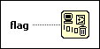

Request Deallocation Function
Owning Palette: Memory Control VIs and Functions
Requires: Base Development System
Deallocates unused memory after the VI that contains this function runs.
Use this function only for advanced performance optimizations. Deallocating unused memory can improve performance in some cases. However, aggressively deallocating memory can cause LabVIEW to reallocate space repeatedly rather than reusing an allocation. Use this function if your VI allocates a large amount of data but never reuses that allocation.

 Add to the block diagram Add to the block diagram |
 Find on the palette Find on the palette |